テキスト・画像ステッカー
完成済みのスライドへ説明や素材を追加
SLIDECAST STUDIO · UPDATE
アップデート｜スライド内ステッカー・段階表示・登場退場エフェクト
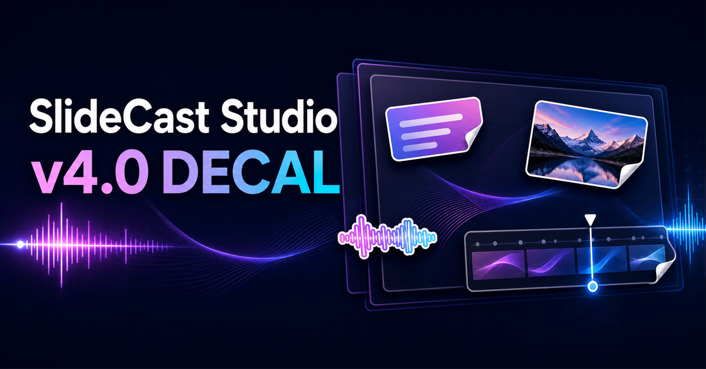
👋 OVERVIEW
SlideCast Studioを、v4.0「DECAL」に更新しました。
今回の中心は、完成済みのスライドの上に文字や画像を後から追加できる「スライド内ステッカー」です。元のスライドを作り直さず、説明の順番に合わせて強調ラベルや補足、画像を表示したり、まだ見せたくない情報を隠して好きなタイミングで見せたりできます。
完成済みのスライドへ説明や素材を追加
箇条書きや答えを隠して順番に公開
フェード、ポップ、ワイプなどを設定
登場時と退場時へ別々の音を設定
位置・大きさ・音声とのタイミングを整列
画像と設定済みステッカーを使い回し
見せたくない情報を目隠し
設定と台本エリアを探しやすく整理
表現力と再生・書き出しを改善
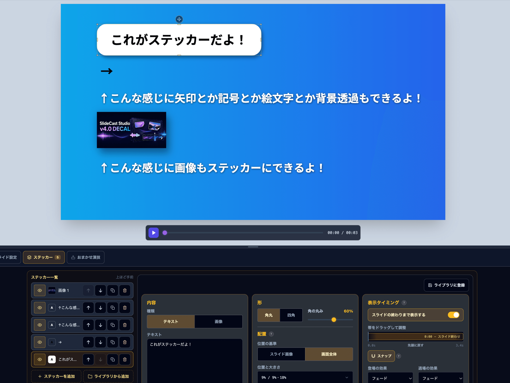
動画を編集中のまま、テキストと画像をスライド上へ追加できます。
これまでは補足や強調を追加したくなった場合、元のPowerPointや画像へ戻って修正し、もう一度取り込む必要がありました。v4.0では、エディターの「ステッカー」タブからテキストステッカーと画像ステッカーを追加できます。
ステッカーは1枚のスライドに最大10枚。プレビュー上で移動し、四隅や辺のつまみから大きさ・幅・高さを調整できます。
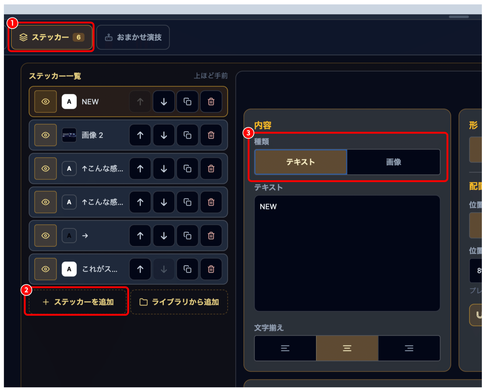
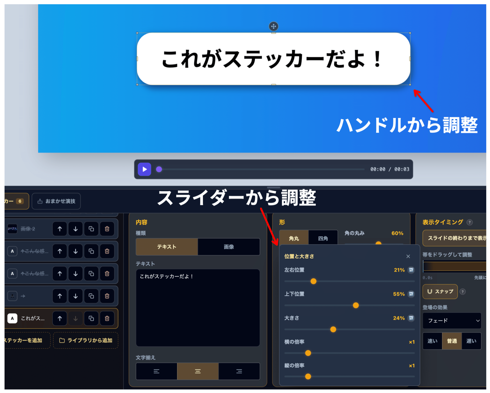
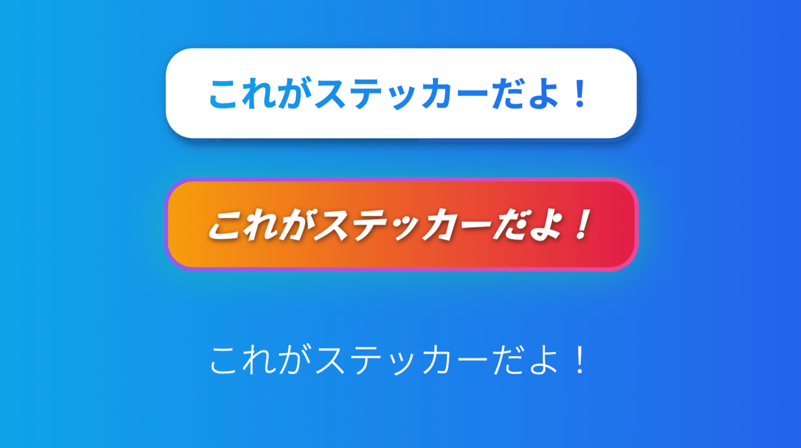
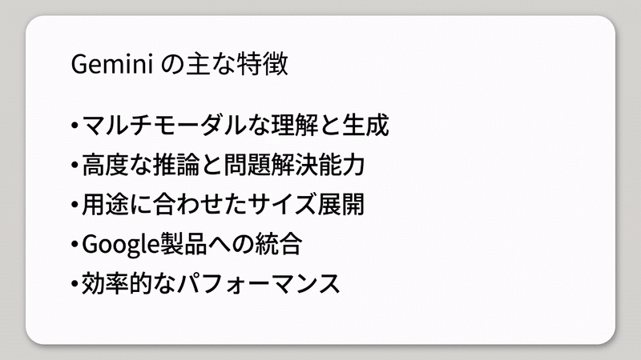
配置は「画像と一緒に動かす」と「キャンバス全体へ配置」を切り替えられます。前者はスライド画像の縮小やKen Burnsに追従し、後者はスライド画像の外側を含む画面全体へ固定します。
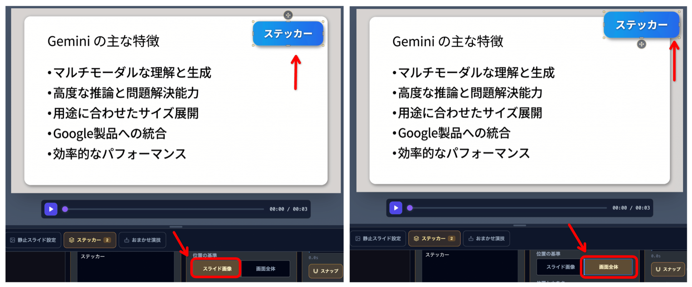
表示開始と終了を設定し、静止スライドにも時間に沿った演出を加えられます。
各ステッカーには表示開始と表示終了の時間を設定できます。タイムラインの帯を移動したり、両端をつまんで表示時間を変えたりできます。
特に便利なのが、冒頭からステッカーで情報を隠しておき、説明が進んだタイミングで順番に退場させる使い方です。同じスライドを何枚も複製せず、1枚の静止スライドのまま箇条書きやクイズの答えを段階表示できます。
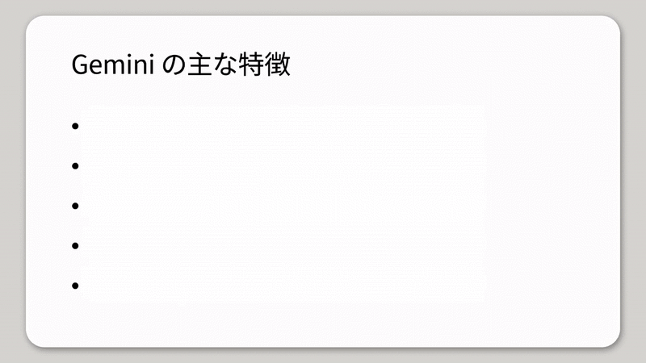
登場・退場は「なし」「フェード」「ポップ／縮んで消える」「スライドイン／横へ抜ける」「左からワイプ」「下からふわっと／上へどける」から選べます。速さは「速い／普通／遅い」の3段階です。
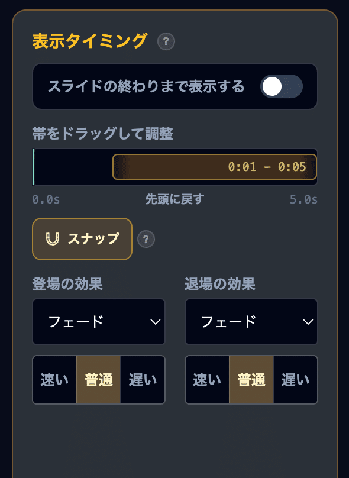
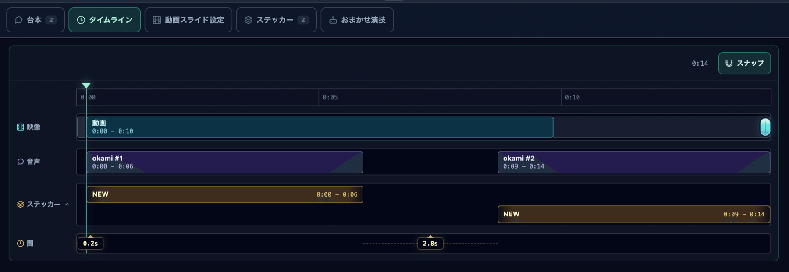
🖼️ 静止画・PDF・PPTXへの出力
時間軸がない出力では、効果完了後の状態でステッカーを描画します。ステッカーを含めるかどうかも選択できます。
表示の変化へ音を合わせ、視聴者の注意を自然に誘導できます。
ステッカーの登場と退場に、それぞれ別の効果音を設定できます。内蔵音は次の7種類です。
基本
通知風
強調
指し示し
送り・極短
結論の強調
横から
手持ちのMP3などを取り込み、ステッカー効果音ライブラリから再利用することもできます。箇条書きを隠したステッカーへ「退場時」の音を設定すれば、下の項目が現れる瞬間の効果音として使えます。
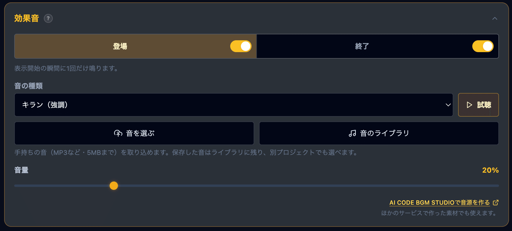
位置・大きさ・時間をスナップでそろえ、よく使う素材と設定を保存できます。
ステッカーを移動すると、ほかのステッカーの端・中央やキャンバスの中央へ吸い付きます。サイズ調整時は、ほかのステッカーと同じ幅・高さへ合わせられます。
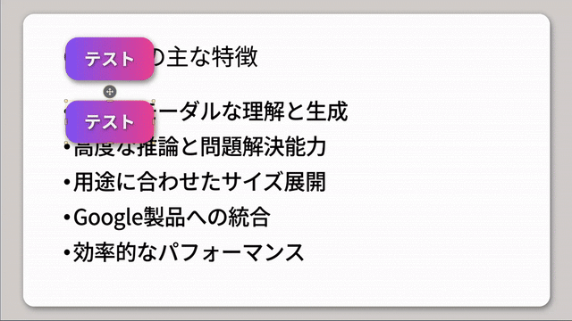
タイムラインでは、ナレーションやほかのステッカーの開始・終了、スライドの開始・終了、現在の再生位置へスナップします。
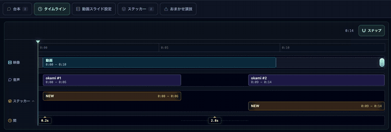
よく使う画像は「ステッカー画像ライブラリ」へ、見た目・大きさ・効果音を設定したステッカーは「ステッカーライブラリ」へ保存できます。位置と表示タイミングは、新しいスライドへ合わせやすいよう保存されません。
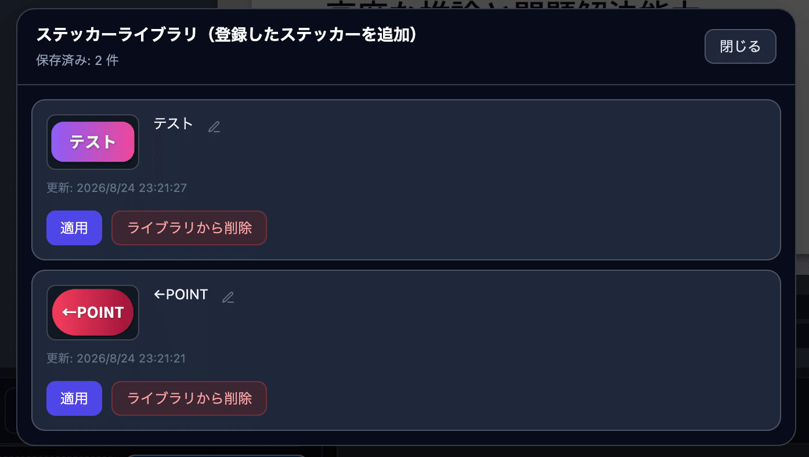
テキストステッカーを、スライドの一部を隠す板としても使えます。
モザイクまたはぼかしを選び、強さを1〜100で調整できます。文字を空にすると、目隠しだけの板として使えます。背景色だけを半透明にする装飾にも対応しました。
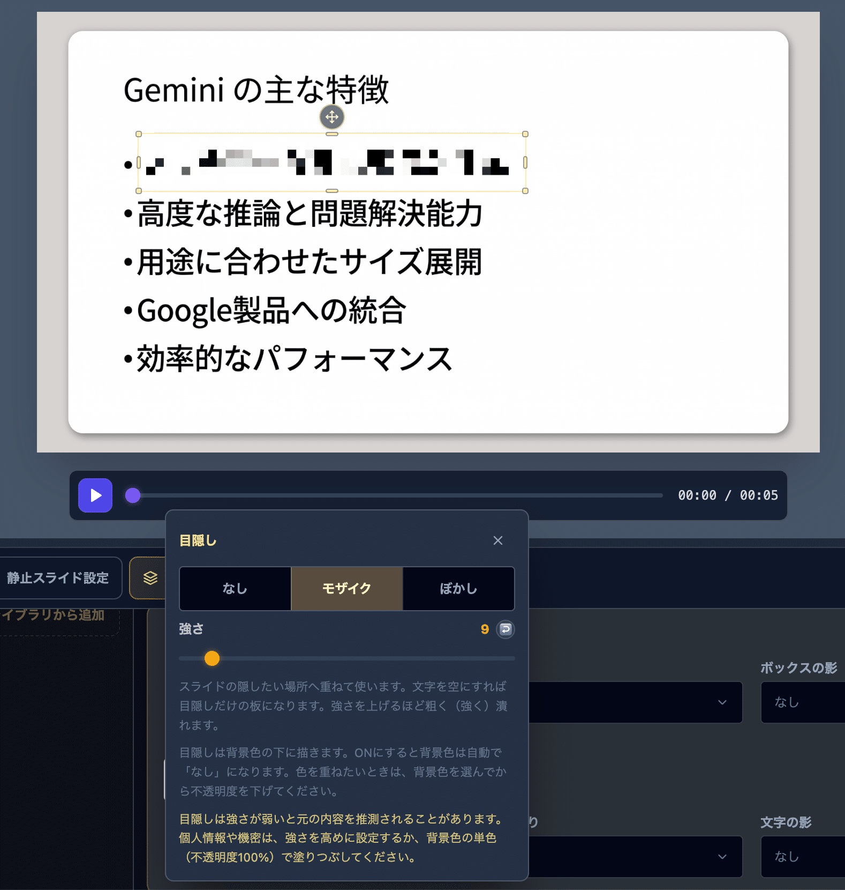
⚠️ 個人情報や機密情報を隠すとき
モザイクやぼかしが弱いと元の内容を推測される可能性があります。強さを高めにするか、不透明度100%の単色で塗りつぶしてください。
今したい作業からタブを選び、必要な設定へ直接移動できます。
通常モードは「台本／タイムライン／スライド設定／ステッカー／おまかせ演技」の5タブ、かんたんモードは「台本／ステッカー／おまかせ演技」の3タブに整理しました。選んだ項目だけを表示するため、縦方向のスクロールも少なくなります。
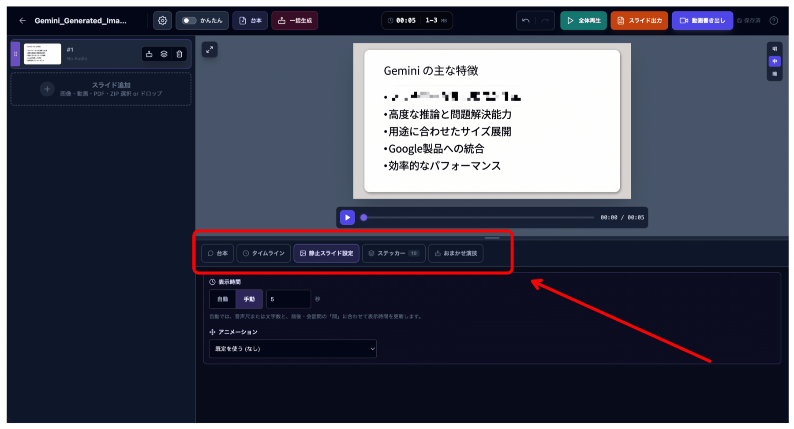
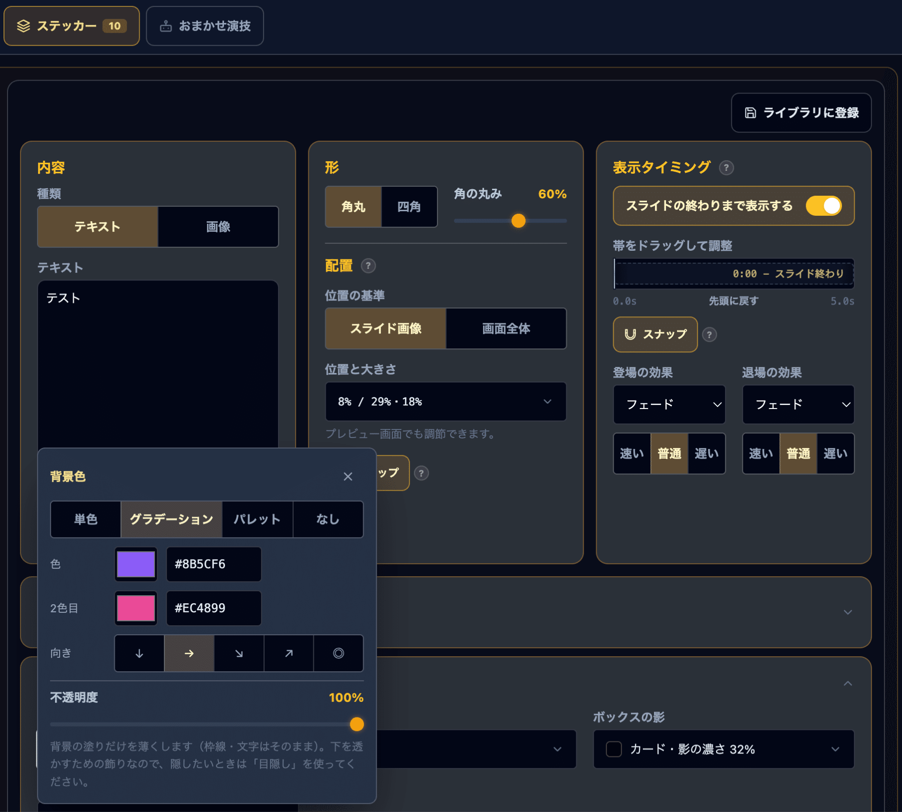
文字間隔と影の設定を、字幕・テロップ・バッジ・ステッカーなどへ広げました。
字幕、キャラ別字幕、バッジ、テロップ、文字ステッカーで文字間隔を調整できます。少し広げて雰囲気を整えたり、長いテロップを少し詰めたりできます。
影は色・種類・濃さ・ぼかし・距離を整理し、キャラアイコン、吹き出し、字幕、テロップ、バッジ、ステッカーなどで扱いやすくしました。
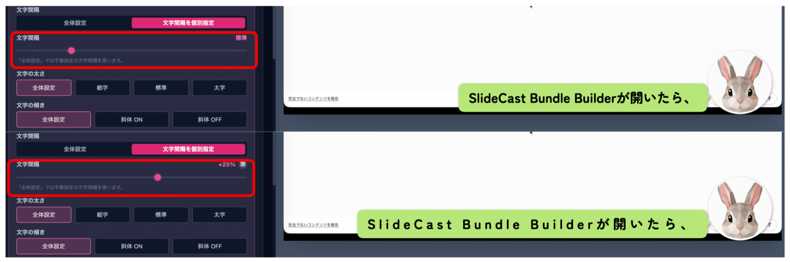
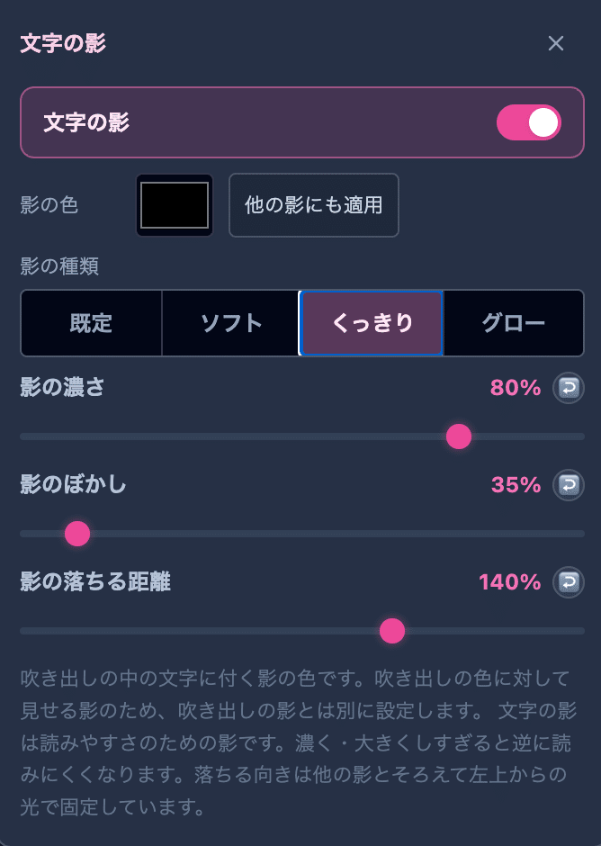
長いプロジェクトや大きな画像を扱うときの負荷を見直しました。
既存の見た目や音は勝手に変わりません。素材数とメモリ使用量には注意してください。
ステッカーを追加していない既存プロジェクトは、従来どおりステッカーなしで表示されます。新しい効果音や目隠しも既定でOFFです。
画像・アニメーション画像・効果音はブラウザー内に保存されるため、数やサイズに応じて保存容量を使います。
| ライブラリ | 上限 |
|---|---|
| ステッカー画像 | 60件 |
| 設定済みステッカー | 60件 |
| ステッカー効果音 | 30件 |
⚠️ アニメーション画像
ファイルサイズが小さくても、コマ数や画像サイズによって再生時のメモリを大きく使う場合があります。重いときは小さい画像や短いアニメーションをお試しください。
購入済みの方は、これまでと同じ有料noteの共有リンクからv4.0をコピーして利用できます。
💾 先にバックアップを作成
既存のプロジェクトやライブラリ、設定を引き継ぐ場合は、念のため「データ保存」からバックアップを作成してください。
GAS版を同じURLのまま更新する場合は、v4.0の配布フォルダーにある「無題.html」と「AppBundle.html」を既存のGASプロジェクトへ差し替え、既存のデプロイを「新バージョン」として再デプロイします。
ローカルHTML版は「SlideCast Studio v4.0【ローカル版】.html」をダウンロードして開いてください。新しいGASプロジェクトや別のブラウザーでは以前のデータが自動表示されないため、バックアップから復元します。
何を足すか、どこへ置くか、いつ見せるか、どう現れ消えるか、どんな音を合わせるか。
v4.0では、1枚のスライドごとに「何を足すか」「どこへ置くか」「いつ見せるか」「どう現れ、どう消えるか」「どんな音を合わせるか」を設計できるようになりました。
説明動画、商品紹介、教材、会話動画、ショート動画など、見せる順番が大切な動画の「もう少し分かりやすく、もう少し見やすく」にご活用ください。